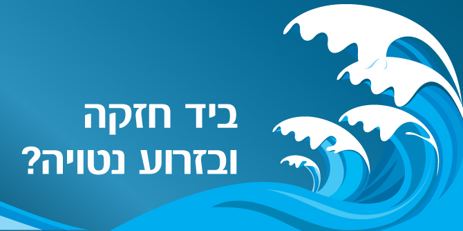

ערב פסח זה עומד בסימן בין המצרים, בזמן מיוחד ומוזר שבו החגיגיות מעורבת בדאגה. המובן מאליו מאותגר. דווקא בשל כך, בקשב, בענווה המתבקשת מהמצב החדש הזה, ביקשנו להתכנס למעמד משותף, לצעוד בנתיב שטוותה עבורנו חברת סגל מנדל ד"ר רות קלדרון, ולעשות את מה שאנחנו חושבים שהכרחי – ללמוד.
בתור נושא לעיון משותף בחרנו בביטוי ביד חזקה ובזרוע נטויה, המופיע בהגדה של פסח ובמקרא במשמעות המתארת את עוצמת התערבות האלוהים בעולם – הכוח שהופעל על-פי המסורת נגד פרעה כדי להוציא את בני ישראל מעבדות לחירות.
האומנם "יד חזקה" רק נגד פרעה? ומה על השפעת אותה יד על בני ישראל שניצבו בן לילה מול אתגר החירות? מול שנות המדבר הארוכות?
"יד חזקה" מופיעה בחייהם של בני אדם מאז ומעולם, ואולי היא גם פוגשת את חיינו היום. באיזה אופן אירועים חיצוניים ה"נופלים" עלינו לפתע ב"יד חזקה" עשויים להיות גם מעוררים לשינוי? האם לעתים היא מזמנת אפשרות לשינוי שלא יכול לכון בלעדיה? האם ישנה יציאת מצרים אישית? ומהי בעצם ההתבוננות החדשה במובן מאליו?
במפגש קיימה ד"ר קלדרון שיחות קצרות עם שלושה מחברי קהילת מנדל ועם אורחת:
בין הדברים שובצו שיחה ושיר של הזמרת
רונה קינן; קטע מסרט הקולנוע "שישה פרקי אבות" של
עמיחי חסון, בוגר מחזור א' של תוכנית מנדל למנהיגות בתרבות יהודית; והמופע "דרבוקה לקורונה" של
תזמורת ירושלים מזרח ומערב.
האזנה למפגש (ללא וידאו):
סדרת המפגשים "זמן משבר – זמן מנהיגות" מיועדת לעמיתים ולבוגרים של תוכניות המנהיגות של קרן מנדל-ישראל.
צפו במפגש הראשון בסדרה: הרצאה מאת פרופ' מנואל טרכטנברג בנושא "משבר הקורונה מנקודת מבט גלובלית – כיצד נערכים לשלב הבא?" כאן >>
{kind=link}